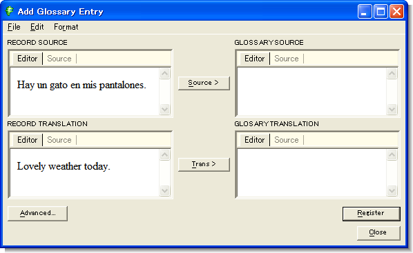

4.2.6. Add Glossary Entries from a Translation¶
As you translate, you might wish to add all or part of a memory entry to your glossary. Felix is designed to make this task as simple and efficient as possible.
As with editing and deleting records, there are two situations in which you might want to register all or part of an entry to your glossary: when a single record is being displayed, and when a list of records is being displayed (see Delete an Entry for screen shots).
In addition, you may wish to add the entire source and translation to your glossary, or just parts of it (say, a technical or frequently occurring term). Note that short memory entries are automatically added to the glossary, so there is no need to add these. (The Glossary window will give you visual feedback when an entry is added, so you can check if your entry has already been added. You can configure the length of entries for automatic addition; see 3.2.11 Set User Preferences for details.)
| – | Single Entry | List of Entries |
|---|---|---|
| Register terms from the entry: | Register Glossary Entries | [R] |
| Add the entire entry to the glossary: | Add Entry To Glossary | [G] |
If you choose to add the entire entry to the glossary, then this completes the transfer. If you decided to register individual terms from the entry, then the Add Glossary Entry dialog box appears:

Note
This dialog box is resizeable. Just click and drag the edges or corners to resize.
- Use the mouse to select a source, then click Source > to set it in the glossary source window.
- Use the mouse to select a translation, then click Trans > to set it in the glossary translation window. Note: This order may be reversed.
- Click Register to register the glossary entry.
- Click Close when you’re finished adding entries.